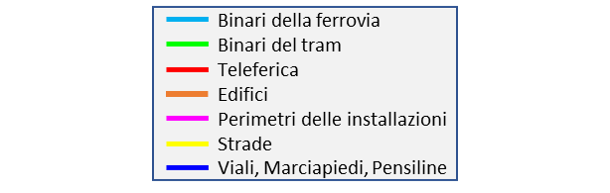
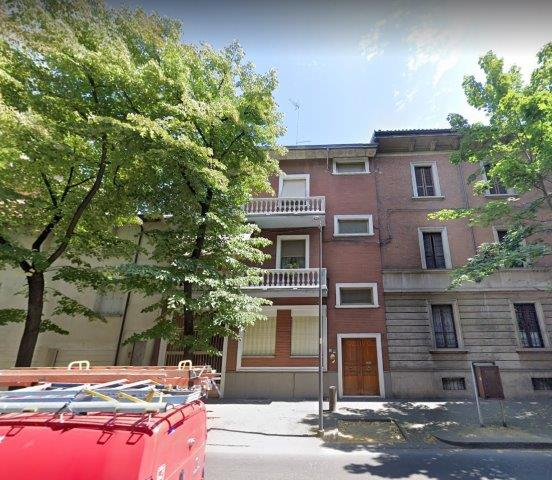
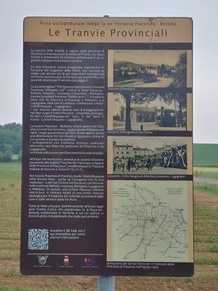

Ferrovia Piacenza-Bettola
In questo progetto ho ordinato geograficamente il materiale fotografico, sia storico sia attuale, che ho raccolto sulla dismessa linea ferroviaria Piacenza-Bettola, che funzionò tra il 1933 ed il 1967.
Per vedere il progetto bisogna far scorrere i capitoli di testo. Ogni volta che si passa a un nuovo capitolo, la vista della mappa si aggiorna, mostrando la posizione descritta nel testo.
Per ingrandire una foto, fare click sulla foto stessa aprendola in una nuova finestra. Per continuare con la navigazione, chiudere la finestra con la foto e tornare a quella del progetto.
È possibile cambiare la vista della mappa con il controllo del mouse (su PC) o con le dita (su tablet):
I bottoni azzurri in alto a sinistra permettono di accendere/spegnere i vari elementi della mappa.
I colori della grafica disegnata in mappa si riferiscono a questa legenda: 
Le fonti dei documenti sono elencate alla fine del testo (link)
Riccardo Rocca (email), Novembre 2020
Stazione di Piacenza
L'edificio della Stazione di Piacenza venne costruito nel 1880 e inizialmente serviva come stazione della rete di tram a vapore che si diramavano in provincia. Questa foto degli anni '20 mostra la facciata della stazione in questo periodo, come indica l'insegna "STAZIONE TRAMWAY":
Lo scalo ferroviario ai tempi dei tram a vapore. In secondo piano sulla destra si riconosce l'area delle Ferrovie dello Stato con la stazione (ancora tutta di un solo piano) e la tettoia delle pensiline:
Questa foto invece mostra la stazione al tempo della ferrovia elettrica. In primo piano si distingue il Bar Sorgente, sorto nell'edificio che era stato l'antica postazione delle guardie del dazio:
Vista dal lato pensiline con una littorina passeggeri:
Vista dello scalo ferroviario nel 1964, con una serie di carri per il trasporto della marna proveniente dalle cave della Val Nure:
Nel 2000 l'area della Stazione di Piacenza venne completamente rimodellata. Gli antichi edifici vennero abbattuti, i binari rimossi e al loro posto venne costruito il centro commerciale Borgo Faxal:
Deposito Berzolla
Foto del deposito locomotori in costruzione con l'insegna della SIFT (Società Italiana Ferrovie e Tramvie):
Il deposito come si presenta oggi:
In cima ai portoni è visibile la sede per il passaggio del cavo elettrico che alimentava le locomotive:
Sottopassaggio di Barriera Roma, lato stazione
Foto d'epoca del sottopassaggio dopo aver lasciato la stazione. In alto a
sinistra si riconosce uno scorcio dell'edificio dei Magazzini Generali,
che si affaccia su Via Cristoforo Colombo:

Stessa vista come appare oggi, lungo la pista ciclabile che collega il parcheggio del centro commerciale "Borgo Faxal" con la rotonda tra Viale Patrioti e Via IV Novembre. Sulla sinistra si eleva il terrapieno di un binario che si immetteva su Via Cristoforo Colombo:
Cancello su Via dei Pisoni: da qui usciva un binario che proseguiva per Via Cristoforo Colombo:
Sottopassaggio di Barriera Roma, lato Magazzini Generali
Il sottopassaggio visto dall'altra parte. Sulla destra si nota l'imbocco di un altro tunnel che si collegava con la rete delle Ferrovie dello Stato:
Sul lato orientale si trovavano gli edifici dei Magazzini Generali, anch'essi collegati alla ferrovia per permettere l'arrivo delle merci. La foto mostra la facciata laterale di quello che era l'edificio principale che si affacciava su via Cristoforo Colombo e che esiste ancor'oggi:
E questo sono io nel 1963, fotografato dentro quello stesso edificio. In quel periodo infatti l'edificio aveva smesso la sua funzione originaria ed era stato convertito in un condominio abitativo. E la mia famiglia visse in un appartamento di quel condominio per alcuni anni.
Fermata di Barriera Roma
In Viale Patrioti c'era l'ingresso di una seconda fermata in città, con biglietteria e accesso ai binari attraverso una pensilina. L'antico ingresso si trovava al numero 5 di Viale Patrioti ed è stato sostituito da un edificio residenziale: 
La pensilina invece si è conservata ed è ancora visibile lungo l'attuale pista ciclabile:
Vista della pensilina dal lato opposto, dal retro degli edifici che si affacciano su Via Alessandro Bolzoni:
Sottopassaggio della Farnesiana
Foto d'epoca del sottopassaggio della Farnesiana. A sinistra si distinguono la rampa e l'imbocco di un tunnel che permettevano di raggiungere i Magazzini Generali:
Vista attuale del sottopassaggio:
Vista del lato opposto, in una foto dell'epoca. In fondo, sotto l'arcata sinistra, si distingue il ponte della pensilina della fermata di Barriera Roma:
Stazione di Smistamento Piacenza-Cornigliana
All'esterno della zona urbana (dopo l'attuale Via Conciliazione), sorgeva la Stazione di Smistamento (lungo l'attuale Corso Europa).
Mappa estratta dai documenti della società SIFT, conservata nell'Archivio di Stato di Piacenza:
Installazioni Militari:
Prima e dopo la Stazione di Smistamento si staccavano alcune diramazioni dirette a varie installazioni militari:
Mappa delle fortificazioni di Piacenza. I forti San Giuseppe, Galleana e Sant'Antonio fanno parte delle fortificazioni del 1800 (in verde):
Casa Cantoniera Torricelle
Appena usciti dalla città si incontrava una prima casa cantoniera a sorvegliare l'attraversamento della strada provinciale per la Val Nure.
La casa esiste ancora oggi, alla fine di Corso Europa, convertita in abitazione privata:
Il modello di casa cantoniera, come appare nei documenti della SIFT. Si può notare un elemento architettonico distintivo e presente in tutti gli edifici lungo la linea: gli spioventi del tetto che terminano con una estensione orizzontale estesa lungo tutto il lato dell'edificio:
Tracce di resti della ferrovia
Le tracce della ferrovia a volte sono minime e seminascoste. Ad esempio, appena fuori Piacenza, si possono riconoscere le opere in cemento per l'attraversamento di un canale:
In modo simile, presso la località "Quattro Camini", si è conservata traccia dell'antica massicciata, oggi convertita in un vialetto sterrato:
Stazione di San Bonico
La stazione di San Bonico, in foto d'epoca e attuali, è ben conservata
e trasformata in abitazione.

In questa foto si riconosce sulla sinistra un altro elemento architettonico presente in quasi tutte le stazioni della linea: la piccola costruzione, staccata dal corpo principale, che fungeva da bagno pubblico: Progetto dell'edificio della latrina, nei documenti della SIFT:
Stazione di Gariga
Poco prima di arrivare alla stazione di Gariga, si incontrava una casa cantoniera:
La stazione di Gariga è oggi convertita in abitazione e conserva ancora il tipico viale alberato che conduceva all'ingresso:
Stazione di Podenzano
Della stazione di Podenzano si è conservato solo il viale d'accesso alberato, che si chiama appunto "Viale Stazione":
L'edificio della stazione invece non si è conservato, per cui possiamo mostrare solo le foto d'epoca:
In questa foto l'edificio della stazione appare in secondo piano, dietro al piazzale del parco tubi dell'Agip, al tempo della perforazione dei pozzi a gas e olio di Podenzano negli anni '30:
Stazione di Grazzano
Lo sviluppo urbanistico di Grazzano Visconti seguì lo sviluppo delle vie ferrate. La prima linea di tram è degli inizi del '900 e seguiva il tracciato della strada provinciale (linee gialle in mappa) che attraversava l'interno attuale del paese. In quell'epoca da Grazzano Visconti partiva anche una deviazione che raggiungeva Rivergaro:
Successivamente negli anni '20, con l'espansione del borgo, la linea dei tram venne deviata verso l'esterno (linee verdi in mappa) e venne costruita una nuova stazione che è visibile ancora oggi lungo la strada provinciale:
Finalmente venne costruita la ferrovia elettrica (linee azzurre in mappa) con la sua peropria stazione. La linea del tram venne dismessa e lungo il suo percorso venne deviata la strada provinciale.
La stazione di Grazzano Visconti, a differenza delle altre stazioni della linea Piacenza-Bettola, venne costruita in stile medioevale, in armonia con lo stile del resto del borgo:
L'edificio della stazione è attualmente un'abitazione privata, ma ci sono progetti per convertirla in un Bed&Breakfast:
Appena lasciata la stazione di Grazzano Visconti si incontrava una casa cantoniera, anch'essa in stile medioevale:
Stazione di Vigolzone
Stazione di Villò
Stazione di Albarola
La stazione di Albarola era inizialmente una casa cantoniera a cui successivamente venne aggiunta un'ala adibita a sala d'aspetto. Questo è riconoscibile nella foto d'epoca e nel progetto tratto dai documenti della SIFT:
Attualmente l'edificio, profondamente ristrutturato, è adibito ad abitazione. Si riconoscono però alcuni elementi dell'edificio originale, come il tettuccio del piano terra che si estende fino a metà facciata e le finestre del primo piano, identiche le due di destra, differente e aggiunta con la ristrutturazione quella di sinistra.
Subito dopo Albarola, la ferrovia passava su un cavalcavia per attraversare la strada provinciale. Di quel cavalcavia oggi non rimane traccia, però la sua passata presenza è testimoniata dalla doppia curva che si è conservata nel tracciato della strada provinciale (linee gialle in mappa).
Fermata Cave Albarola e Ponte di Ponte dell'Olio
Ponte dell'Olio
Stazione di Riva e Sottopassaggio

Stazione di Molino Croce